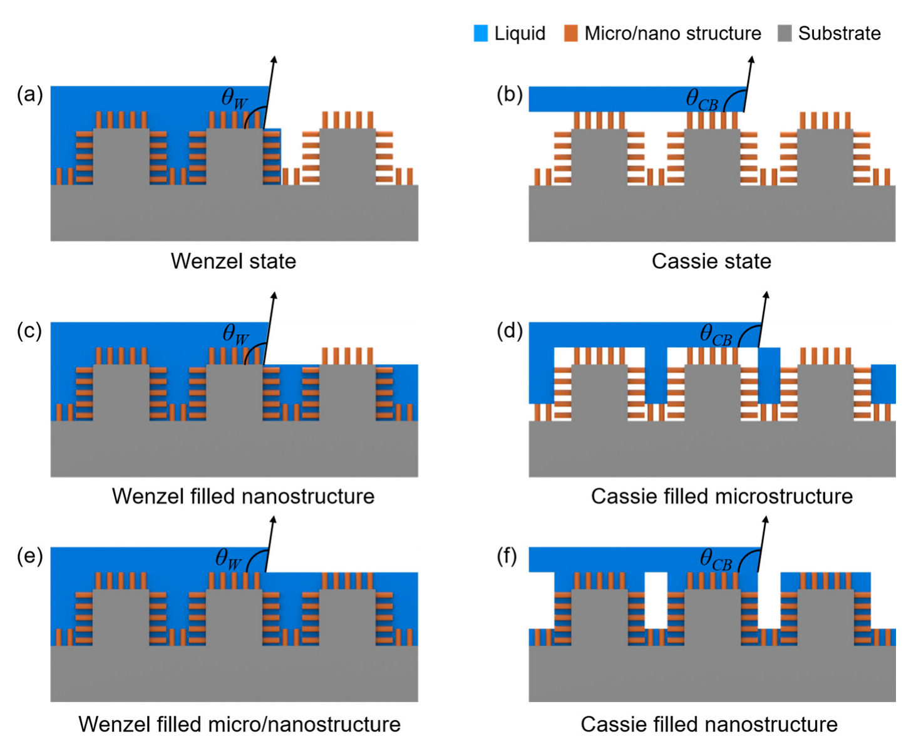

이 연구가 다루는 문제
물과 기름을 튕겨내면서 투명성과 유연성을 유지하는 표면 설계의 상충을 다룬 종설입니다. 패턴 전사, 나노입자 조립, 표면 화학 개질을 통해 젖음과 빛 산란, 변형 내구성을 조절하는 방법을 비교합니다.
투명성과 발액성의 균형
투명한 발액 코팅은 표면 형상과 빛의 투과를 함께 고려해야 합니다. 거칠기는 액체 아래 공기를 가두는 데 도움이 되지만 빛을 산란시키기도 합니다. 이 2018년 리뷰는 휘거나 늘어난 뒤에도 발액성·투명성·유연성을 유지하려면 어떤 제조 조건이 필요한지 살펴봅니다.
세 제조 경로의 비교
패턴 전사는 금형과 복제로 표면 형상을 조절하고, 나노입자 조립은 여러 종류의 기판에 거친 층을 만듭니다. Thiol–ene 반응은 표면 화학을 바꾸어 액체가 잘 젖는 영역과 잘 젖지 않는 영역을 나누는 데 쓰입니다. 형상, 기판, 표면 기능 중 무엇이 중요한지에 따라 적합한 경로가 달라집니다.

미세·나노 계층 구조에서 가능한 여섯 가지 젖음 상태를 비교한 리뷰 도식입니다.
Bichitra Sahoo, Kukro Yoon, Jungmok Seo and Taeyoon Lee (2018). “Chemical and Physical Pathways for Fabricating Flexible Superamphiphobic Surfaces with High Transparency”. Figure 2. DOI: 10.3390/coatings8020047. CC BY 4.0. PDF에서 해당 그림 영역을 잘라 사용했으며, 그림 내용은 변경하지 않았습니다.
젖음·광학·내구성의 평가축
큰 접촉각과 잘 굴러가는 액적은 같은 특성이 아닙니다. 접촉각 이력과 미끄럼각을 함께 보면 액체가 표면에 얼마나 붙잡히는지 알 수 있습니다. 투과율은 파장과 기판에 따라, 내구성은 하중·반복수·마모 방식에 따라 달라지므로 이 조건들을 함께 비교해야 합니다.
형상 제어와 기판 적용성
리뷰는 형상 제어에 유리한 전사법과 다양한 기판에 적용하기 쉬운 나노입자 조립법의 장점을 구분합니다. 투명성과 유연성을 같은 조건에서 충분히 평가하지 않은 연구도 지적합니다. 여러 문헌을 종합한 결론이므로 모든 공정을 하나의 시험에서 비교해 최적법을 정한 결과로 볼 수는 없습니다.
표준화와 재료 선택의 과제
2018년 리뷰는 내구성의 보고·비교 기준이 부족하다는 점을 과제로 꼽습니다. 용도에 따라 접착, 굽힘, 마모, 세탁 시험이 필요하며 불소계 재료의 비용과 환경 부담도 고려해야 합니다. 당시의 논의는 현재 규제나 상용화 수준의 평가를 대신하지 않습니다.
함께 읽을 연구
Designing superoleophobic surfaces
DOI: 10.1126/science.1148326 ↗
재진입 곡률, 표면 화학과 거칠기를 함께 설계해 표면장력이 낮은 액체를 반발시키는 연구입니다.
이 연결은 PubMed 초록에 근거하며 투명성·유연성·마모 내구성을 동시에 확보했다는 근거는 아닙니다.
초록을 참고한 소개RESEARCH NEWS
연구 소식
현재 연결된 소식이 없습니다.
해설에 사용한 자료
해설은 기관 공개 게재본 PDF 1–26쪽의 서론, 젖음 모델·전이, 세 제작 경로, 응용, 권고, 결론, 그림 설명과 Table 1에 근거합니다. 26–32쪽에 실린 개별 참고문헌과 원저 데이터는 독립 검증 범위에 포함되지 않습니다.